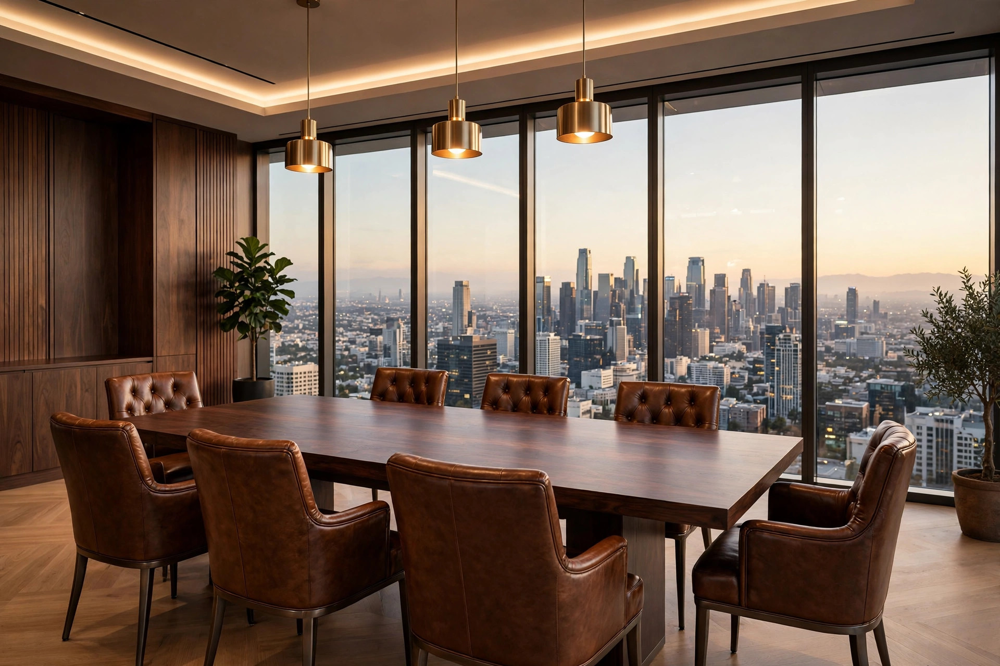
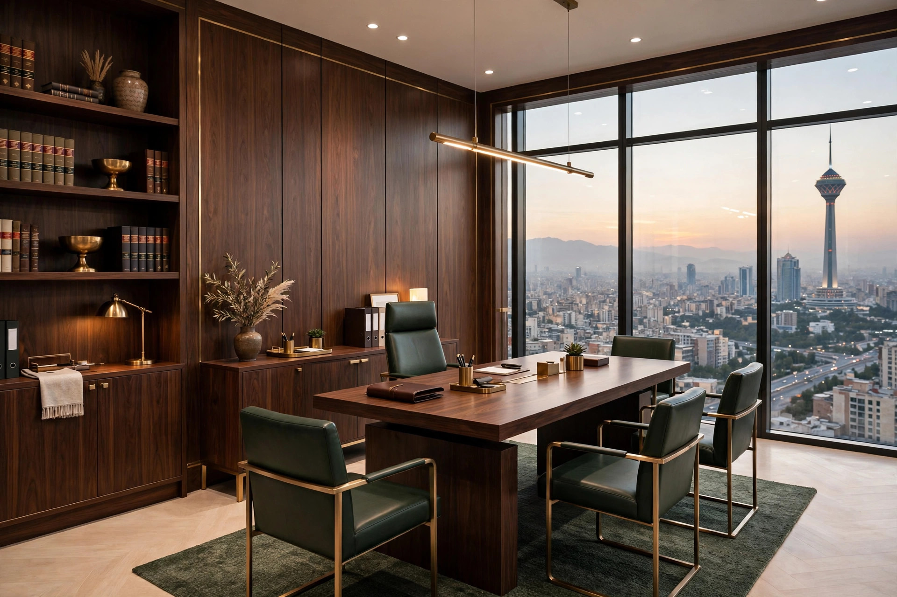
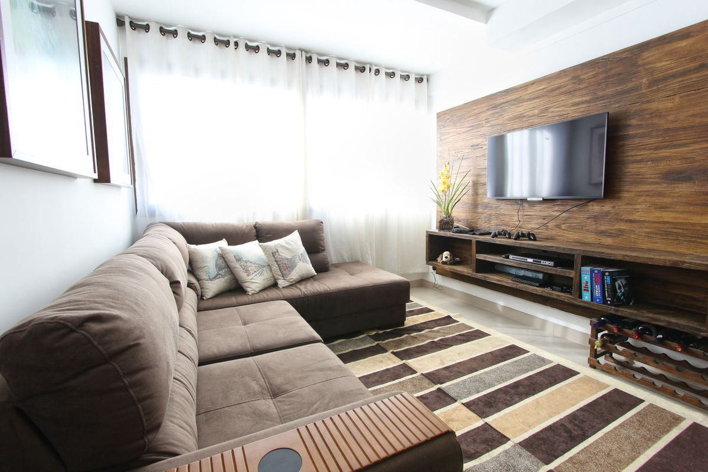

دعاوی ملکی و ثبتی
ملک و سرقفلی، تنظیم و ابطال سند، خلع ید، تخلیه ملک تجاری و مسکونی، اجرتالمثل و اختلاف با شهرداری.
دکتر روحاله کریمی، وکیل پایه یک دادگستری و دارای دکترای تخصصی حقوق خصوصی، با قریب دو دهه وکالت تخصصی در دعاوی حقوقی و کیفری و مشاوره حقوقی شرکتهای تجاری و صنعتی — در میدان ونک تهران. درخواست مشاورهتان را همین حالا آنلاین ثبت کنید.

در دفتر وکالت دکتر کریمی، تیمی از وکلای پایه یک دادگستری و مشاوران حقوقی با هماهنگی و نظارت مستقیم ایشان، پروندهها را در کلیه مراجع قضایی پیگیری میکنند.
ملک و سرقفلی، تنظیم و ابطال سند، خلع ید، تخلیه ملک تجاری و مسکونی، اجرتالمثل و اختلاف با شهرداری.
وکالت در جرایم مالی، جعل و استفاده از سند مجعول، کلاهبرداری، خیانت در امانت و سایر دعاوی کیفری در مراجع بدوی و تجدیدنظر.
تقسیم ترکه و اختلاف بین وراث، وصیت، طلاق، مهریه، نفقه، حضانت و امور محجورین.

مشاوره حقوقی شرکتهای تجاری و صنعتی از سال ۱۳۸۶ تاکنون؛ تنظیم قراردادهای پیمانکاری، بازرگانی و مشارکت و حل اختلاف بین شرکا.

دعاوی چک و سفته، امور بانکی و بیمه، مالیات و تأمین اجتماعی و روابط کارگر و کارفرما.
مشاوره حضوری و آنلاین در تمامی دعاوی؛ تنظیم دادخواست، شکوائیه، لایحه و انواع قرارداد.
دکتر روحاله کریمی وکیل پایه یک دادگستری، عضو کانون وکلای دادگستری مرکز و مدرس دانشگاه است؛ ترکیبی از پشتوانه علمی حقوق خصوصی و قریب دو دهه تجربه عملی در دادگاهها.
پروانه پایه یک دادگستری و دکترای تخصصی حقوق خصوصی؛ پروندهتان را وکیلی با پشتوانه علمی و عملی همزمان پیگیری میکند.
وکیل و مشاور حقوقی شرکتهای تجاری و صنعتی بزرگ کشور از سال ۱۳۸۶ تاکنون؛ از قرارداد تا اختلاف شرکا.
در دفتر وکالت دکتر کریمی، تیمی مجرب از وکلای پایه یک و مشاوران حقوقی با هماهنگی مستقیم ایشان موکلین را یاری میکنند.
تدریس حقوق در دانشگاه و عضویت در کمیسیون آموزش کانون وکلای دادگستری مرکز؛ یعنی تسلط روزآمد بر قوانین و رویه قضایی.
میدان ونک، بین چهارراه آفریقا و گاندی شمالی — دسترسی آسان از سراسر تهران برای مشاوره حضوری.



در فرم مشاوره، موضوع پرونده و مشخصات تماس را ثبت کنید تا کارشناسان ما بررسی کنند.
با شمارهای که ثبت کردهاید تماس میگیریم و مسیر حقوقی پرونده و هزینه مشاوره را شفاف ارائه میکنیم.
با عقد قرارداد وکالت، پیگیری پروندهتان در مراجع قضایی آغاز میشود.
تهران، میدان ونک، بین چهارراه آفریقا و گاندی شمالی، پلاک ۵۹، طبقه ۴، واحد ۱۷.
دعاوی حقوقی (ملکی، ثبتی، ارث، خانواده، چک و بانکی، شرکتها و شهرداری) و دعاوی کیفری، در کلیه مراجع قضایی بدوی و تجدیدنظر، دیوان عالی کشور و دیوان عدالت اداری.
بله؛ مشاوره بهصورت حضوری در دفتر ونک و آنلاین ارائه میشود. برای هماهنگی، فرم درخواست همین صفحه را پر کنید یا تماس بگیرید.
قریب دو دهه وکالت تخصصی در دعاوی حقوقی و کیفری؛ ایشان همچنین از سال ۱۳۸۶ وکیل و مشاور حقوقی شرکتهای تجاری و صنعتی بزرگ کشور بودهاند.
فرم درخواست مشاوره همین صفحه را پر کنید یا با شماره ۰۹۱۲۳۳۰۰۵۰۷ تماس بگیرید؛ پاسخگویی شنبه تا پنجشنبه، ساعت ۱۱ تا ۱۲:۳۰ است.
فرم را پر کنید؛ برای بررسی پرونده و هماهنگی جلسه مشاوره با شما تماس میگیریم. اگر ترجیح میدهید مستقیم صحبت کنیم، تماس بگیرید:
۰۹۱۲ ۳۳۰ ۰۵۰۷ اینستاگرام: @dr_rohollah.karimi